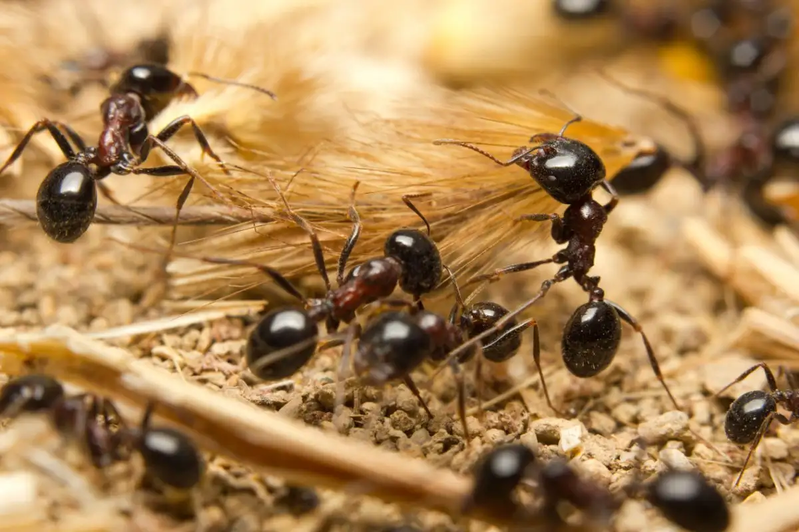

Mud
Out of the mud came the ant.
Darkness. Nothing but darkness. The antennas on its head vibrated ever so slightly, passing signals of the surroundings into the brain of the ant. A brain that is, perhaps, not so different from the mud it was crafted in: dark, fragile, and frankly purposeless. It dared not travel too far, as it will forget the way back into its colony.
Like a mini-computer, the feeble brain inside the ant’s head determined the purpose of this trip: bring back clean food for the queen. Of its peers, this particular ant was notably incapable. It saw its friends go into the queen’s chamber with food, and return happily, being awarded by the queen, with their antennas vibrating incomprehensibly. They never talked to it on those occasions, but each time its presence seemed infinitely small, its antennas dangling before its head, disappointed by its incapability.
The ant makes its way down a giant crater. Alarms sounded inside its head: the terrain was completely different from its last venture. The brain almost cried in despair: it will almost surely be lost on its way back to the colony. However, the ant was determined. What point is there in living, it asked itself, if it cannot even serve its purpose for its colony, for its queen? The hard soil under its feet became softer at the thought of the glory it will achieve once it succeeds in this mission. Think about it: one ant, in a completely alien land, with no light whatsoever, bringing back food for the queen. Its loyalty will surely be proven to-
Before it finished that thought, the darkness was no more. Its mental capabilities were challenged beyond imagination, as it watched one - no, two - no, three suns rise in the sky, each with a trail behind it, making a sharp, whistling noise, louder than any noises it has ever heard in its lifetime. Then, ever louder, as if hell itself had broken loose, countless giant four-legged creatures, propelling themselves on two legs and holding a giant stick with the other two, screamed and charged from both sides of the ant. The Earth itself was shaking, the ant was sure of it. The creatures shouted, and raised their sticks against each other, then - bang! Lightning struck from the tip of the sticks, with a clap of deafening thunder; countless fell, being replaced by others. Bang! More fell to the ground, yelling, crying - red fluids streamed out, slowly, like a vicious snake, from the bodies of the wounded creatures. Bang! Someone fell to the ground right next to the ant, lifting a dust storm that covered it. All the ant could make out with its overwhelmed brain was a shade of blue and white, and the noise made by the creature, despite all the thunders unleashing around it.
“Mom, I’m scared.”
Then it stopped moving, making it not so different, the ant finally determined, to all the mud surrounding it. After what seemed like an eternity, its brain finally started functioning, reminding it of its purpose - to bring food to the queen. The ant looked at the newly-formed body, or, perhaps mud, in front of it. Looks pretty edible, its brain exclaimed. It climbed on top of the body, attempting to scavenge some parts of it to carry back. To scavenge food in this condition for the queen! Its utmost loyalty would surely be proven. Yes, glory - what glory!
-2023.3.4，Rothesay NB，Tony Su
Photo Credit: Alice Klein
Click Me For Document Download as .docx File